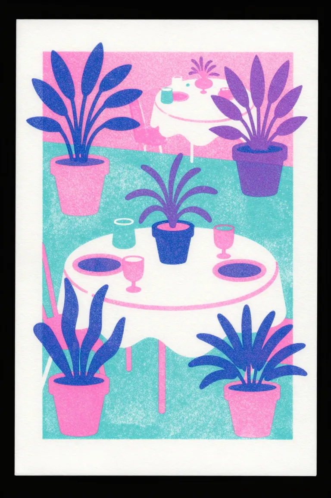

A print from a stencil duplicator: a thermal head cuts a master and the drum pushes soy ink through it, one drum and one bright spot colour for each layer. Riso Kagaku sold it for schools and offices from 1986; from the 2000s, studios made its grain and misregister an art look.

Core thesis
Bright spot inks that mix where they overlap, with a soft grain and a small shift, give a cheap print the warmth of a hand process.
Design principles
Separate the image into 2–4 spot colours; draw each layer in black as a separate file.
Use the bright riso inks: fluorescent pink, medium blue, yellow, and others from the drum list.
Overprint the transparent inks to make the third and fourth colours (pink over yellow gives orange).
Use a grain screen at 50–110 lines an inch for the tones; avoid large flat solids, which print unevenly.
Accept a shift of 1–2 mm between the layers; design so that a small gap does not break the image.
Print on an uncoated, slightly warm paper that takes the soy ink.
Anti-patterns
Process CMYK colour that hides the spot inks
Large, heavy solids that smear and set off
Exact register needed for small text in two colours